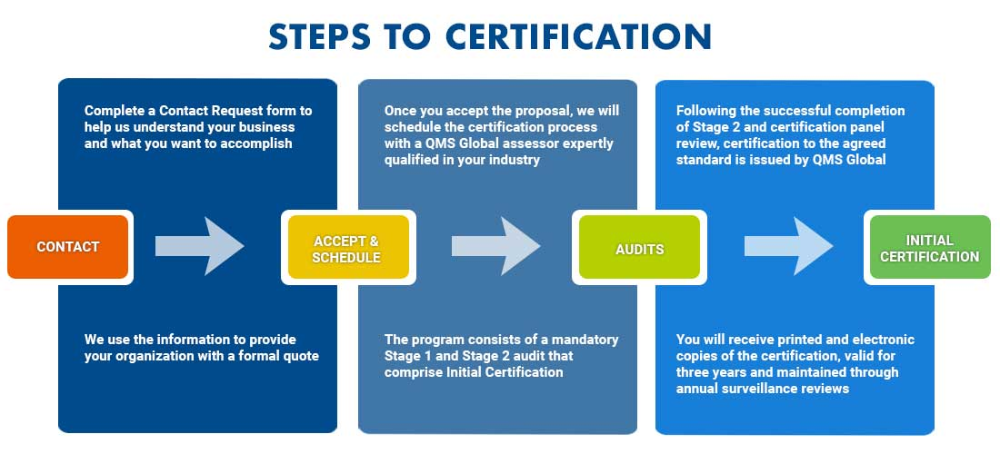

We are an international organization specializing in management system assessment, certification and training to meet the specific needs of companies since 1996. We work in partnership with our clients to provide:
QMS Global certificates are visible around the world, issued by QMS Global Inc, the head office in Boca Raton Florida, directly managing US & European certification and oversight of the regional businesses, QMS Global Corp in Santiago Dominican Republic, managing the Caribbean, Central and South America business, QMS Global Canada in London Ontario Canada providing full certification services throughout Canada and IMS FZC, Sharjah UAE, servicing the Middle East and Asia Pacific markets.
Our management, audit and support staff of talented and dedicated men and women are diverse, multi-cultural and supportive and are focused not only on our success, but the success of all of our clients, stakeholders and suppliers, the communities our offices are located in and the global importance of ISO certification.
Manufactured goods tend to be built from different parts, assembled in stages and may be moved across borders before they reach the final consumer. Certification provides a foundation of trust between the manufacturer, supplier and the end user.
Learn More ▶The services sector is growing at a faster pace than manufacturing and makes up the largest part of the world economy. The benefits of the ISO management systems are the same for small business as they are for multi-national companies.
Learn More ▶Safe food production and distribution throughout the supply chain are serious concerns. Companies face increasing regulatory requirements as well as the need for traceability, transparency and customer safety.
Learn More ▶It is estimated that more than 90 % of the world's businesses are small and medium-sized enterprises (SMEs). Many of these companies have been severely impacted by financial and health crises and the expansion of certification helps small businesses compete on an equal footing.
Learn More ▶As national and global trade expands, the potential for disruption of the supply chain increases. It is critically important to protect your goods and materials from the first point of shipping to the ultimate destination.
Learn More ▶
The risks to businesses of cyber threats are rising and it is critical that organizations control and protect their information and that of their customers. The concept of Managed IT services is increasingly important as businesses grow and enter new markets.
Learn More ▶Organizations in the financial sector are moving toward more open customer networks, e-banking and mobile-banking services. They face stiffer legal and regulatory challenges and information security threats, such as phishing, malware or cyber-attacks.
Learn More ▶Using standards is essential for international, national, state and local government organizations. QMS Global works with government and public services to improve their operations, provide social responsibility support and improve public services.
Learn More ▶Quality Management
Food Safety
Control of Food
Safety
Occupational Health
& Safety
Corporate
Responsibility
Environmental
Management
Information Security
IT Service Management
Supply Chain Security
Business Continuity
Energy Management
Medical Devices
